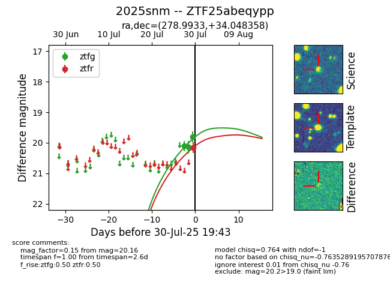

Target 2025snm at 2025-07-30 19:43, see:
FINK: fink-portal.org/2025snm
Lasair: lasair-ztf.lsst.ac.uk/objects/2025snm
ALeRCE: alerce.online/object/2025snm
TNS: wis-tns.org/object/2025snm
YSE: ziggy.ucolick.org/yse/transient_detail/2025snm
alt names
ZTF25abeqypp (ztf,fink)
2025snm (tns,yse)
coordinates:
equatorial (ra, dec) = (278.9933,+34.04836)
galactic (l, b) = (62.6995,+17.75953)
photometry
last ztfg=19.80, ztfr=20.16
3 ztfg, 1 ztfr detections
